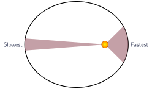
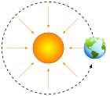
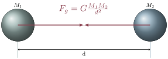
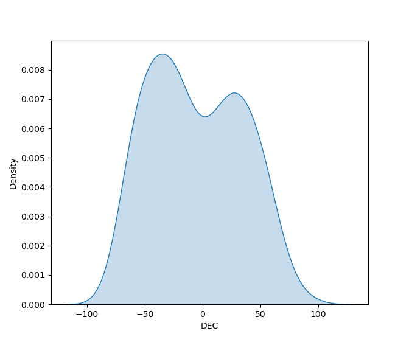

Gravity and Distributions
Jed Rembold
January 23, 2025
Announcements
- Homework 1
- Should have everything you need to do all of P1 and potentially start P2
- Second check-in will go out this weekend! Don’t forget to fill it out!
- Just a few of you still need to fill out the information gathering poll here
Recap
- Kepler found that all orbiting objects move in an ellipse (Kepler’s
1st Law)
- The central object exists at one of the focus points
- Ellipse and orbit vocabulary
- Using the
fitellipselibraries
Today’s Plan
- Kepler continued
- Laws 2 and 3
- Gravity
- Distributions
- Histograms/Density plots
- 2D variants
Return of Kepler
Kepler’s 2nd Law
- A line joining a planet to the Sun sweeps out equal areas in equal
times
- Results in planets moving faster when close to the Sun and slower when far away

Kepler’s 3rd Law
- The square of a planet’s orbital period is
proportional to the cube of its semi-major axis.
- A planet’s period is the time it takes to complete an entire orbit
- An orbit’s semi-major axis we defined earlier to be half the major axis
- Mathematically, this looks like: \[ p^2 \propto a^3 \qquad\text{or}\qquad \frac{p^2}{a^3} = \text{constant} \] where \(p\) is the period and \(a\) is the semi-major axis
- For objects orbiting the Sun, if you choose units
of years and AU, then \[ p^2 \approx a^3
\]
- 1 AU = 1 astronomic unit = average distance from Earth to Sun (\(1.496\times10^{11}\) meter)
Projections
- When observing, you rarely get a perfectly top-down view of an ellipse
- Often, you are looking at some view projected from the side
- This does not change the measurement of the period!
- It may make measuring the semi-major axis more difficult though
- Since many planets (and moons) have mostly circular orbits, you can estimate the major axis by just taking the largest end-to-end distance that you observe
Newton’s Gravity
Why Gravity?
- Kepler told us that there must be these relationships, but he couldn’t say why
- Newton found that, if the direction that something is moving
changes, then it must have experienced some force
- Newton’s big connection (one of them) was determining that the necessary force turns out to be from gravity (at least for most astronomic objects)

Gravity
- Gravity is the universal attractor
- Anything with mass attracts anything else with mass
- Strength of force increases with the amount of mass involved
- Strength of force decreases rapidly with distance between the masses

Newton meets Kepler’s 3rd
- Kepler already had worked out \[ \frac{a^3}{p^2} = \text{same value for all planets orbiting Sun} \]
- Newton worked out, starting with the force, that two objects held in
orbit by gravity would obey: \[
\frac{a^3}{p^2} = \frac{G(M_1 + M_2)}{4\pi^2} \] where:
- \(M_1, M_2\) are the masses of the objects in kilograms
- \(a\) is the average separation between the objects in meters
- \(p\) is the orbital period in seconds
- \(G\) is the gravitational constant (\(6.67\times10^{-11}\,\tfrac{m^3}{kg\,s^2}\))
Some nicer units
- Put in more convenient units, Newton’s formulation of Kepler’s 3rd
boils down to: \[ \frac{a^3}{p^2} = (M_1 +
M_2)_\odot \] where
- \(M_1, M_2\) are the masses of objects in solar masses (multiples of the Sun’s mass)
- \(a\) is the average separation of the objects in AU
- \(p\) is the orbital period in years
- For the Sun and most planets, \(M_1 + M_2 \approx 1 M_\odot\)
- If you can measure \(a\) and \(p\), then you can work out the mass of the objects!
Visualizing Distributions
Distributions
- There is a lot of stuff in space!
- To understand bulk properties of objects, we commonly need to resort to looking at various distributions
- Distributions can be comprised by looking at almost any variable of interest (or in some cases multiple variables)

Common usages:
- EDA: exploring and bringing to light interesting properties or trends in the gathered data
- By fitting mathematical expressions to the distribution, you now
have a tool to use in further analysis
- This is particularly common in simulations, where simulations pull from known distributions to create physically realistic situations
- What type of mathematical distribution fits best can potentially tell you about possible inner workings that yielded that distribution
- Classification: sometimes there are several distinct groupings in a distribution that can lead to various types of classification
Histograms
- A histogram is a visual indication of how many times a certain variable appears
- Y-axis represents counts, and the x-axis is divided into a number of bins
- Data points that have a value appearing within a particular bin contribute to that bin’s count
- Commonly will want to try several binning methods or sizes
Generating Histograms
Matplotlib can generate plots directly:
plt.hist( variable_list, bins=num_bins ) plt.show()
Just use the
histfunction:hist( variable_list, breaks=num_bins )Or, in ggplot
ggplot(data=df, aes(x=variable) ) + geom_histogram()
When Bins fail
- The choice of bins can often lead to distributions that might feel pretty subjective
- One option is to use one of the auto-binning algorithms provided by your histogram software (read documentation)
- Another, which especially makes sense for continuous data, is to
look at a Kernel Density Estimate, or KDE plot
- Most common kernel is that of a Gaussian, but can be different
- Essentially stacks multiple Gaussians for each point, and then sums them together
- Results in a “smoother” looking histogram
Generating KDE Plots
Pandas can generate plots directly:
df[column name].plot(kind='kde')- Does require
scipyunder the hood, so will need it installed
- Does require
Can also install Seaborn and use its variants of you like
import seaborn as sbn sbn.kdeplot(df[column name])
Just use the
plotanddensityfunctions:plot(density(variable_list))In ggplot:
ggplot(data=df, aes(x=column)) + geom_density(bw='bcv')
Activity!
- Here is a collection of
satellite information for satellites orbiting the Earth
- It has a lot of (some nonsense) columns
- You will be interested in the column named
'Apogee (km)' - This table originally included some satellites that are really distant from the Earth, but I’ve already filtered it a bit down to our region of interest
- Create both histogram and KDE plots of the distribution of satellite
apogee distances
- Can you see the outer cluster formed from geosynchronous satellites?
2D Histograms and KDE Plots
- Sometimes you have multiple variables that you want to visualize together as a distribution
- There are 2D analogs of both histograms and KDE plots
- One variable along each axis
- Counts or density still determine color

Multivariate Distribution Creation
Histogram in Matplotlib
plt.hist2d(xs, ys, bins=20)KDE plot easiest through Seaborn
sbn.kdeplot(x=xs, y=ys, fill=True)
Histogram through ggplot
ggplot(data=df, aes(x=xs, y=xs) ) + geom_bin_2d()KDE plot through ggplot
ggplot(data=df, aes(x=xs, y=xs) ) + geom_density_2d_filled()